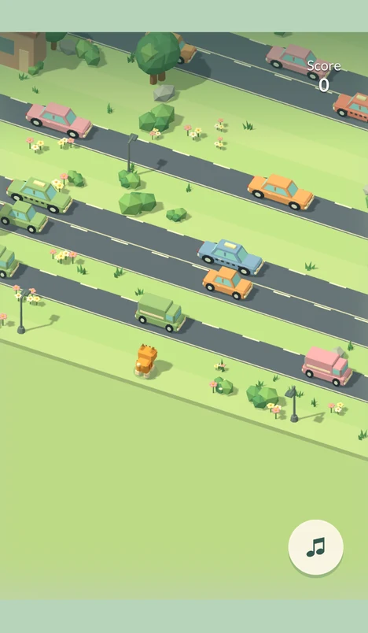

One hop at a time
Tap anywhere in the play area and the cat hops to the next row. There is no sideways steering or backtracking: the choice is when to move. You earn one point for each completed hop into a new row, including the grass between roads. A car hit ends the run.
That leaves a small but useful decision at every crossing. Do you take the gap in front of you, or let another car pass? On the grass you can wait. Once you enter the road, the traffic keeps moving, so a clear space now is only part of the picture.
Play Cat Crossing: First Paws →

A sunny neighbourhood with moving hazards
We built Cat Crossing around an original ginger cat and low-poly scenery, with models made in Blender. Pastel cars travel through the neighbourhood while green strips break up the roads. Music and sound effects accompany the hops; the music button lets you mute the tune separately.
The soft colours do not make the roads harmless. As you travel farther, traffic becomes less forgiving. There is no countdown pushing you off the grass, and there is no finish line to reach. The score records how far you make it before a collision. Waiting is part of play, although it will not carry you across the next lane.
A different rhythm in our Minit collection
Cat Crossing brings a new kind of timing to our six-game Minit collection. Meeting Mayhem gives you a calendar to rearrange. Ashen Ascent asks you to aim a jump. Here, the direction is already decided: you watch moving traffic and choose the moment to commit.
It also sits differently from Riot Road's continuous squad action or Rainbow Roll's steering. You can stop on a safe patch, look ahead and start again with a single tap. That alternation between watching and moving is the centre of Cat Crossing.
The same cat can face a different crossing
A Minit Post is a particular playable challenge. Cat Crossing supports settings for the neighbourhood pattern, traffic speed, gaps between vehicles, difficulty growth and the maximum number of consecutive road lanes. Changing those settings can give another Post a different pace while keeping the same one-tap action.
The link above opens First Paws, our first published Cat Crossing Post. For the rest of the lineup, read our guide to the games. Our introduction to Minit Games explains why we are building these focused games alongside Meeting Mayhem on Android.